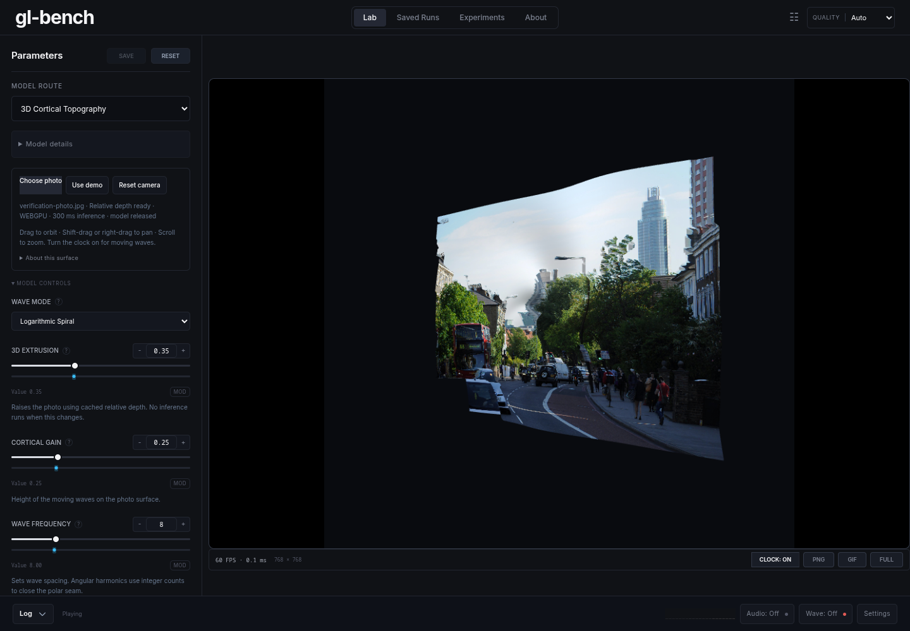

ANGLE (AMD, Vulkan 1.4.354 (AMD Radeon RX 6700 XT (RADV NAVI22) (0x000073DF)), radv) · 768×768 canvas · 65,536 vertices
One-shot depth: webgpu, 300 ms inference; 3625 ms including download and initialization.
| Condition | Display FPS | Draw FPS | p95 / p99 ms | Max ms | Total depth runs | Long tasks |
|---|---|---|---|---|---|---|
| Demo waves | 60.0 | 60.9 | 16.9 / 17.1 | 17.3 | 0 | 0 |
| Photo with cached depth | 60.1 | 61.1 | 16.9 / 17.0 | 17.3 | 1 | 0 |
| Photo during continuous orbit | 60.0 | 61.0 | 16.8 / 17.0 | 17.2 | 1 | 0 |
Verification photo: Depth Anything V2 example image.
